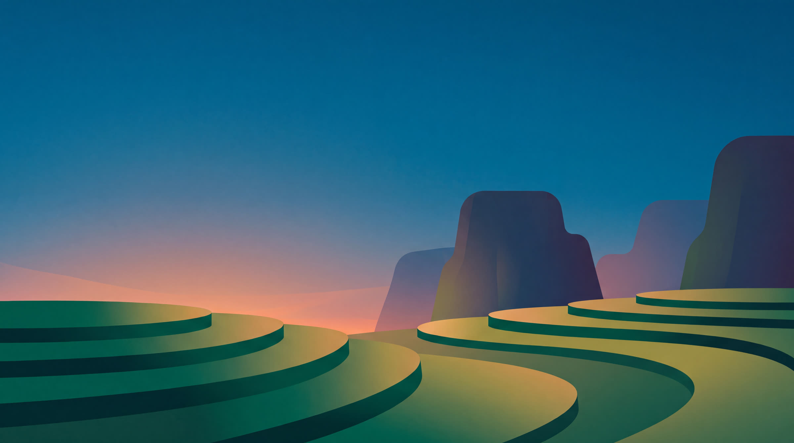
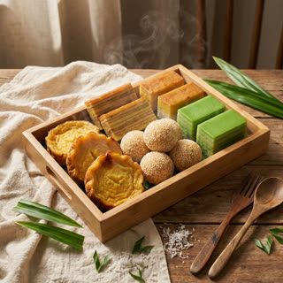

Fresh sourdough, 8am daily

Tell Suara what you do, once. It writes and designs your posts every week — you just say yes.
We're a bakery in Bangsar — sourdough and custom cakes, mostly young families. We want more weekend pre-orders
Add your logo or photosHow it works
You do the first step once. After that Suara does the work and you approve it from your phone.



What you get
Images, carousels and captions, ready to go out.
Sized for Instagram, not cropped from a square.
Logo, colours, fonts and tone set once and applied to everything.
Bahasa Melayu, English, or both in the same post.
See the whole week and say yes from your phone.
"Make it shorter." "Less pink." No forms, no revision rounds.
Changes
An agency charges you again for every revision. Suara learns from yours, so next week needs fewer.
No forms, no revision rounds. Reply like you would to a person — "too formal", "use the new logo", "more about the price".
Tell it once that you never discount and it never asks again. Every correction is baked into next week's batch.
You see the whole week together and approve it in one go — not a post at a time, not a queue of tickets.
Pricing
Try it free for two weeks. No card, no contract, cancel whenever.